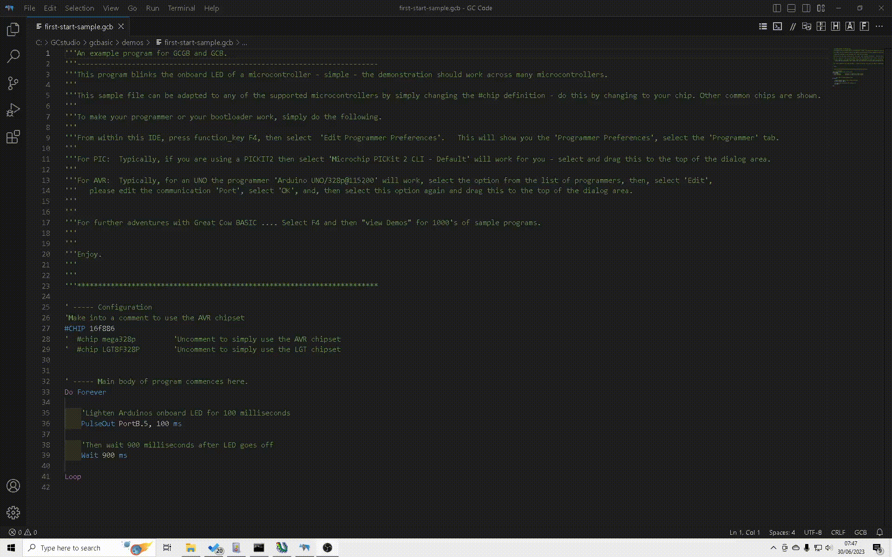
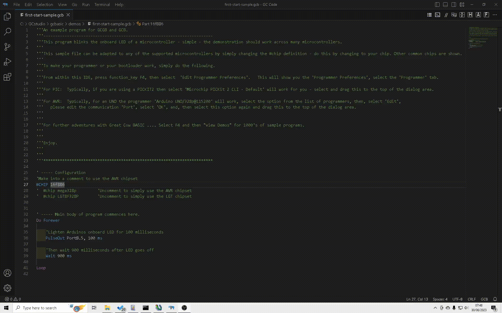

Need to compile a program with GCBASIC, but don’t know where to begin? Try these simple instructions:
- Complete the installation using the default values - select all the programmers but not the portable mode.
- The installer will automatically start the IDE.
- When a GCBASIC source file is opened, check out the “GCB tools” menu ( IDE Tools / GCB tools ) - through this menu you can access the oneclick commands. Or try the right mouse button - this will access the same options.
- The IDE Tools… commands (function keys F5 - F8) starts a GCBASIC utility which calls the batchfiles for compiling sourcecode and programming
("flashing")(1) the target microcontroller. You have to select the appropriate programmer in “Edit Programmer Preferences” ( IDE Tools / GCB tools / Edit Programmer Preferences or by pressing Ctrl+Alt+E ). Find your programmer in the list and drag it to the top beneath the heading “Programmers to use (in order)”. GCBASIC will now attempt to flash the microcontroller with that programmer first when you click on "Make HEX and FLASH" ( F5 ) or "FLASH previous made hexfile" ( F8 ).
- In the unlikely event that your programmer is not listed you can add it by pressing “Add…” in “Edit Programmer Preferences”. You would have to know the working directory and command line options etc. for the programmer. See the help tips at the bottom by clicking on the fields.
- For project-specific flashing you can edit the current programmers in “Edit Programmer Preferences” to suit your needs by clicking on “Edit…”. Use the “Use If:” parameter to choose programmer preferences. See the help tips. The chip model is autodetected by the IDE for use in “Use IF:” or in command line options etc.
- Some programmers use a .hex file to "flash" the microcontroller. By selecting "Make HEX" ( F5 ), GCBASIC will compile the program and make a .hex file in the same directory as the GCBASIC file. This method can also be used to check for errors in the GCBASIC program before flashing.
- Included programmer software is:
— Avrdude for AVR,
— PICPgm for PIC,
— PicKit2 and PicKit3
— TinyBootLoader+
— Arduino
— Northern Software Programmer
— Microchip Xpress Board and many, many more.
(1) You need a suitable programmer to do this, and instructions should be
included with the programmer on how to download and connect the hardware to the microcontroller.
Programmer Preferences
The “Programmer Preferences” is a software tool to control and set-up the different programmers. See below:
When using GC Code at the IDE
Select Terminal/Run Task or press function <F4> to see the menu

Or, when using GC Code at the IDE
Select the drop down menu to see the menu

When using SynWrite at the IDE